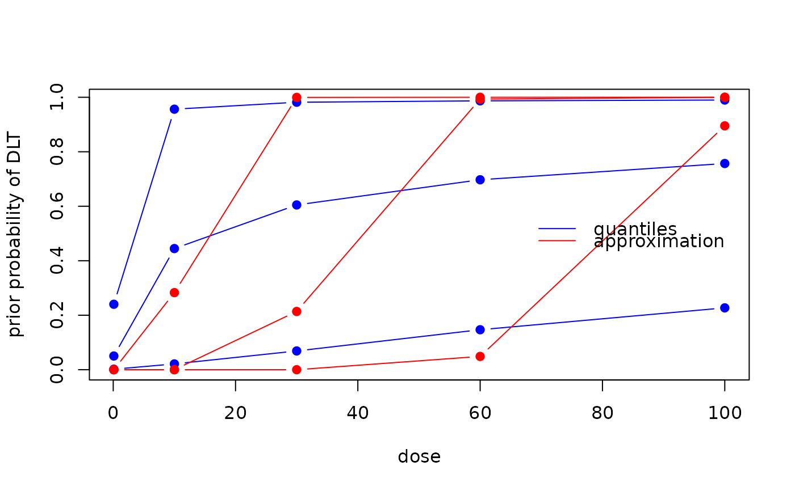

This function constructs a minimally informative prior, which is captured in
a LogisticNormal (or
LogisticLogNormal) object.
Usage
MinimalInformative(
dosegrid,
refDose,
threshmin = 0.2,
threshmax = 0.3,
probmin = 0.05,
probmax = 0.05,
...
)Arguments
- dosegrid
the dose grid
- refDose
the reference dose
- threshmin
Any toxicity probability above this threshold would be very unlikely (see
probmin) at the minimum dose (default: 0.2)- threshmax
Any toxicity probability below this threshold would be very unlikely (see
probmax) at the maximum dose (default: 0.3)- probmin
the prior probability of exceeding
threshminat the minimum dose (default: 0.05)- probmax
the prior probability of being below
threshmaxat the maximum dose (default: 0.05)- ...
additional arguments for computations, see
Quantiles2LogisticNormal, e.g.refDoseandlogNormal=TRUEto obtain a minimal informative log normal prior.
Details
Based on the proposal by Neuenschwander et al (2008, Statistics in
Medicine), a minimally informative prior distribution is constructed. The
required key input is the minimum (\(d_{1}\) in the notation of the
Appendix A.1 of that paper) and the maximum value (\(d_{J}\)) of the dose
grid supplied to this function. Then threshmin is the probability
threshold \(q_{1}\), such that any probability of DLT larger than
\(q_{1}\) has only 5% probability. Therefore \(q_{1}\) is the 95%
quantile of the beta distribution and hence \(p_{1} = 0.95\). Likewise,
threshmax is the probability threshold \(q_{J}\), such that any
probability of DLT smaller than \(q_{J}\) has only 5% probability
(\(p_{J} = 0.05\)). The probabilities \(1 - p_{1}\) and \(p_{J}\) can be
controlled with the arguments probmin and probmax, respectively.
Subsequently, for all doses supplied in the
dosegrid argument, beta distributions are set up from the assumption
that the prior medians are linear in log-dose on the logit scale, and
Quantiles2LogisticNormal is used to transform the resulting
quantiles into an approximating LogisticNormal (or
LogisticLogNormal) model. Note that the reference dose
is not required for these computations.
Examples
# Setting up a minimal informative prior
# max.time is quite small only for the purpose of showing the example. They
# should be increased for a real case.
set.seed(132)
coarseGrid <- c(0.1, 10, 30, 60, 100)
minInfModel <- MinimalInformative(dosegrid = coarseGrid,
refDose=50,
threshmin=0.2,
threshmax=0.3,
control=## for real case: leave out control
list(max.time=0.1))
#> It: 1, obj value (lsEnd): 0.6732911061 indTrace: 1
#> timeSpan = 4.196561 maxTime = 0.1
#> Emini is: 0.6732911061
#> xmini are:
#> 3.436837973 9.074768474 4.306636605 0.7253533934 -0.7572128108
#> Totally it used 4.196574 secs
#> No. of function call is: 991
# Plotting the result
matplot(x=coarseGrid,
y=minInfModel$required,
type="b", pch=19, col="blue", lty=1,
xlab="dose",
ylab="prior probability of DLT")
matlines(x=coarseGrid,
y=minInfModel$quantiles,
type="b", pch=19, col="red", lty=1)
legend("right",
legend=c("quantiles", "approximation"),
col=c("blue", "red"),
lty=1,
bty="n")
